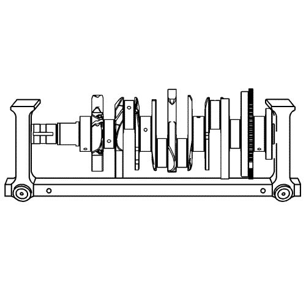
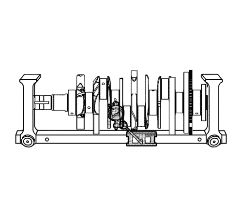
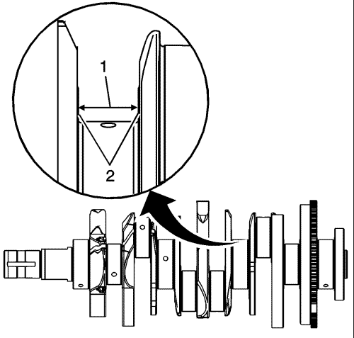
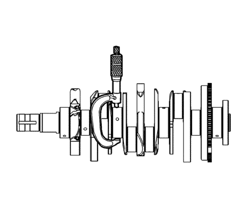
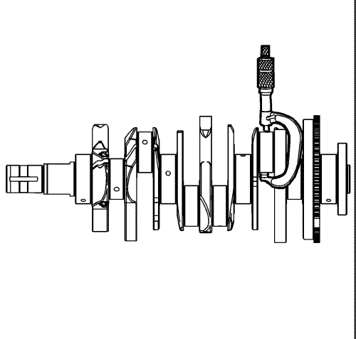
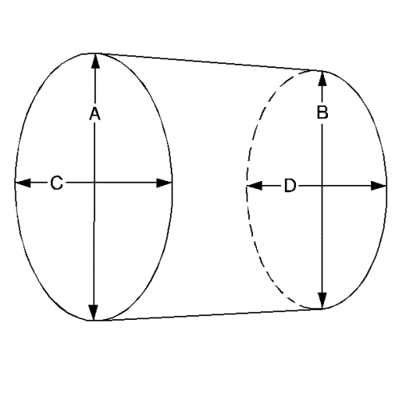

Limpieza y comprobación de cojinetes y cigüeñal
Procedimiento de limpieza
- Limpie en disolvente los siguientes componentes:
| • | Cojinetes de varillas de unión |
| • | Pasos de aceite de cigüeñal |
| • | Orificios roscados de cigüeñal |
Advertencia: Consulte Advertencia, protección ocular en la sección Prólogo
- Seque los componentes siguientes con aire comprimido:
| • | Cojinetes de varillas de unión |
| • | Pasos de aceite de cigüeñal |
| • | Orificios roscados de cigüeñal |
Examen visual

- Realice las siguientes comprobaciones visuales:
| • | Compruebe que el orificio de perno de equilibrador de cigüeñal (1) no tiene dañada la rosca. |
| • | Compruebe que la zona de montaje del equilibrador del cigüeñal (2) no presenta daños. |
| • | Compruebe que el chavetero del cigüeñal (3) no está dañado. |
| • | Compruebe que las aletas de accionamiento de la bomba de aceite (4) no están dañadas. |
| • | Compruebe que los muñones de bancada del cigüeñal (5) no están dañados. |
| • | Compruebe que los muñones de varilla de unión del cigüeñal (6) no están dañados. |
| • | Compruebe que los pasos de aceite del cigüeñal (7) no están obstruidos. |
| • | Compruebe que las superficies de pared de empuje de cojinete de bancada del cigüeñal (8) no están dañadas. |
| • | Compruebe que los contrapesos del cigüeñal (9) no están dañados. |
| • | Compruebe que los dientes del anillo del reluctor del cigüeñal (10) no están dañados. |
| • | Compruebe que la superficie de sello de aceite principal trasera del cigüeñal (11) no está dañada. |
| • | Compruebe que la superficie de montaje del disco de inercia del motor del cigüeñal (12) no está dañada. |
| • | Compruebe que el orificio piloto del cigüeñal (13) no está dañado. |
| • | Compruebe que los orificios de perno de disco de inercia del motor del cigüeñal (14) no tienen dañado el roscado. |
- Repare o sustituya el cigüeñal según sea necesario.
Comprobación del cojinete del cigüeñal

Nota:
| • | Deben sustituirse todos los cojinetes de muñones de bancada y varillas de unión que se hayan utilizado en un motor en funcionamiento. Nunca reutilice los cojinetes de cigüeñal o varillas de unión. |
| • | Deben utilizarse los siguientes estados de desgaste de cojinete para diagnosticar problemas operativos del motor o la causa de un problema. |
- Compruebe la fatiga indicada por cráteres o cavidades. Unas secciones aplanadas en las mitades del cojinete también indican fatiga.

- Compruebe una excesiva formación de estrías o decoloración en la parte delantera y trasera de los semicojinetes.
- Compruebe que los cojinetes de bancada no presentan suciedad incrustada en el material del cojinete.

- Compruebe si el asiento es incorrecto, lo cual se indica por la presencia de secciones brillantes pulidas.
Medición del cigüeñal
Herramientas especiales
GE 7872 Comparador de pie magnético
Si desea informarse sobre herramientas regionales equivalentes, consultar Herramientas especiales

- Mediante una fijación adecuada, sujete el cigüeñal.

- Monte el indicador GE 7872.
- Mida la excentricidad del cigüeñal usando el indicador GE 7872. Consultar Especificaciones mecánicas del motor : LF1 .

- Mida el desgaste de la anchura de pared de empuje del cigüeñal (1) mediante un micrómetro de interiores. Consultar Especificaciones mecánicas del motor : LF1 .
- Mida la excentricidad de la superficie (2) de la pared de empuje del cigüeñal usando el indicador GE 7872. Consultar Especificaciones mecánicas del motor : LF1 .
- Si los muñones del cigüeñal están desgastados o dañados por encima de los valores especificados, el cigüeñal puede redondearse 0,25 mm (0,010 pulg.). Sólo está disponible 1 tamaño de cojinete de bancada sobredimensionado.

- Compruebe que los muñones de bancada del cigüeñal no presentan un tamaño menor del correspondiente mediante un micrómetro de exteriores.

- Mediante un micrómetro de exteriores, compruebe que los pasadores del cigüeñal no presentan un tamaño menor del especificado.
- Compare sus mediciones con los valores indicados en Especificaciones mecánicas del motor : LF1 . Si los muñones de cigüeñal están desgastados por encima de los valores especificados, el cigüeñal puede redondearse 0,25 mm (0,010 pulg.). Sólo está disponible 1 tamaño de cojinetes de varilla de unión sobredimensionados.

- Mida la excentricidad de los muñones de cigüeñal y cojinete de bancada mediante el siguiente procedimiento:
| 10.1. | Mediante un micrómetro de exteriores, mida el muñón en los puntos finales delanteros y traseros del muñón. Denomine a estos puntos A y B. |
| 10.2. | Mida el muñón en dos puntos situados exactamente a 90 grados de los primeros puntos. Llame a estos puntos C y D. |
| 10.3. | Reste A a C y B a D. Las diferencias indicarán la excentricidad del muñón. |
| 10.4. | La excentricidad no debería superar el valor máximo de 0,004 mm (0,00016 pulg.). |
| 10.5. | Si los muñones están desgastados por encima de los valores especificados, el cigüeñal puede rectificarse 0,25 mm (0,010 pulg.). Sólo está disponible 1 tamaño mayor de cojinetes de varilla de unión y cigüeñal. |
- Mida la conicidad de los muñones de cigüeñal y cojinete de bancada mediante el siguiente procedimiento:
| 11.1. | Mediante un micrómetro de exteriores, mida el muñón en el extremo delantero (A) y trasero (B) del muñón de forma paralela a la línea central del cigüeñal. |
| 11.2. | Reste el valor de medición menor al mayor. El resultado será el muñón del cilindro. |
| 11.3. | Si la conicidad de muñón de cojinete de bancada es superior a 0,004 mm (0,00016 pulg.), sustituya el cigüeñal. |
| 11.4. | Si los muñones están desgastados por encima de los valores especificados, el cigüeñal puede rectificarse 0,25 mm (0,010 pulg.). Sólo está disponible 1 tamaño mayor de cojinetes de varilla de unión y cigüeñal. |
| © Copyright Chevrolet Europe. All rights reserved |